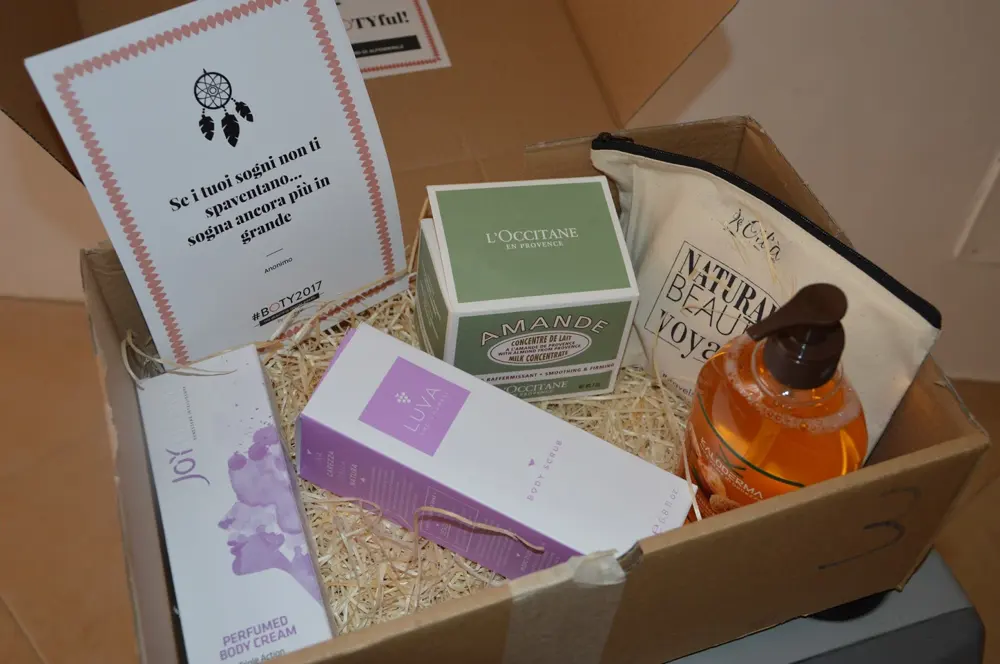
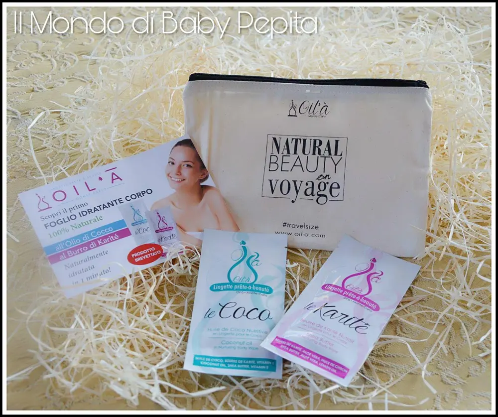
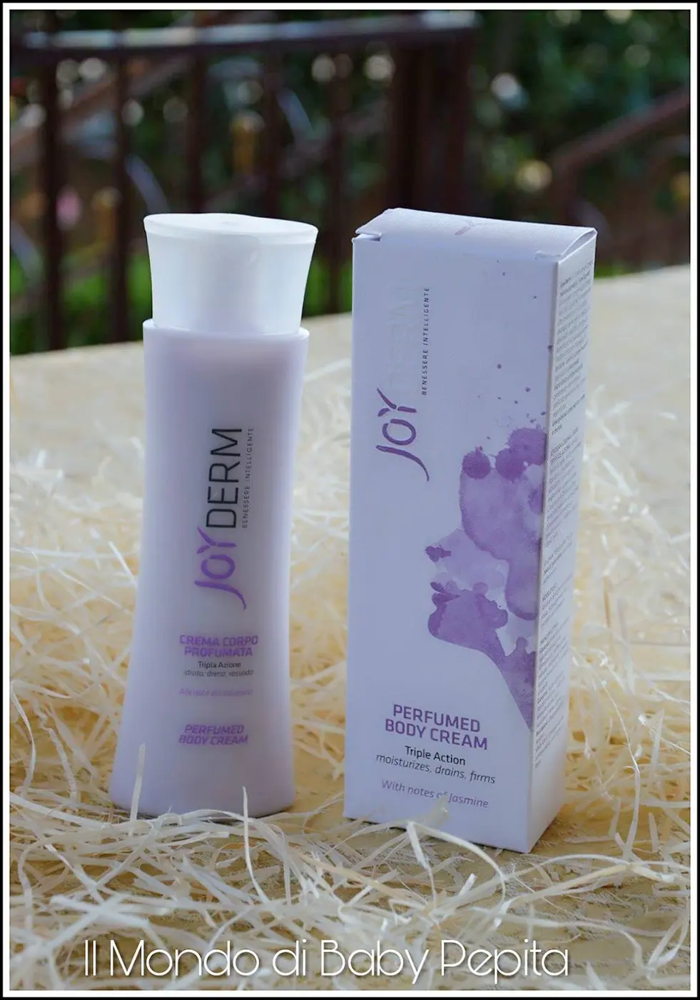
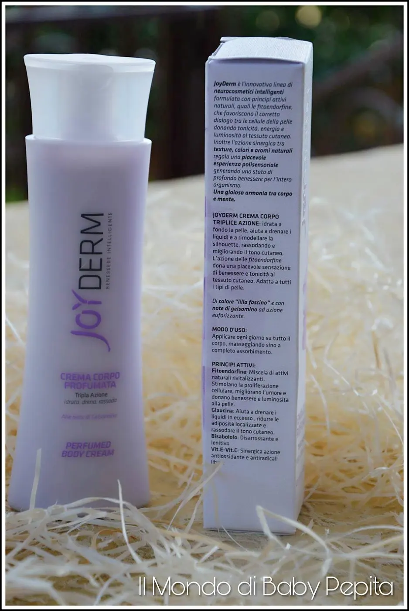
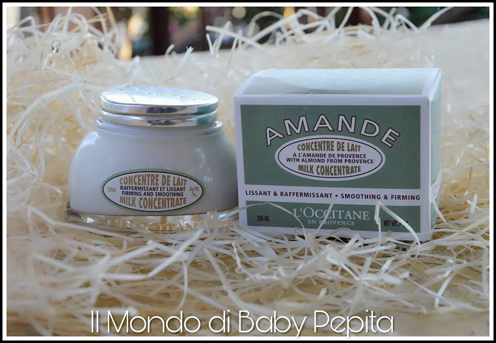
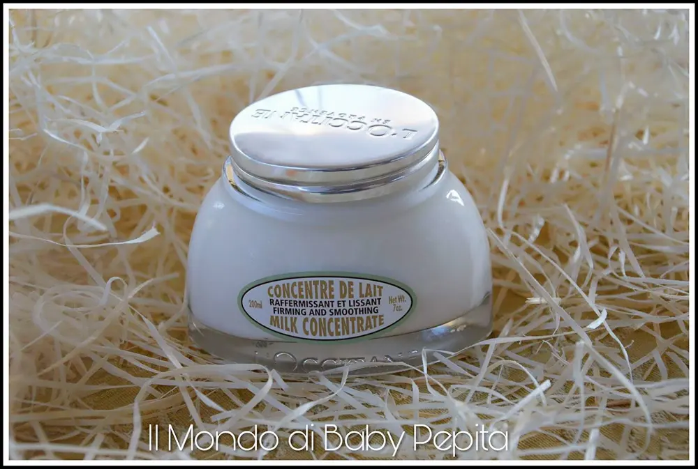
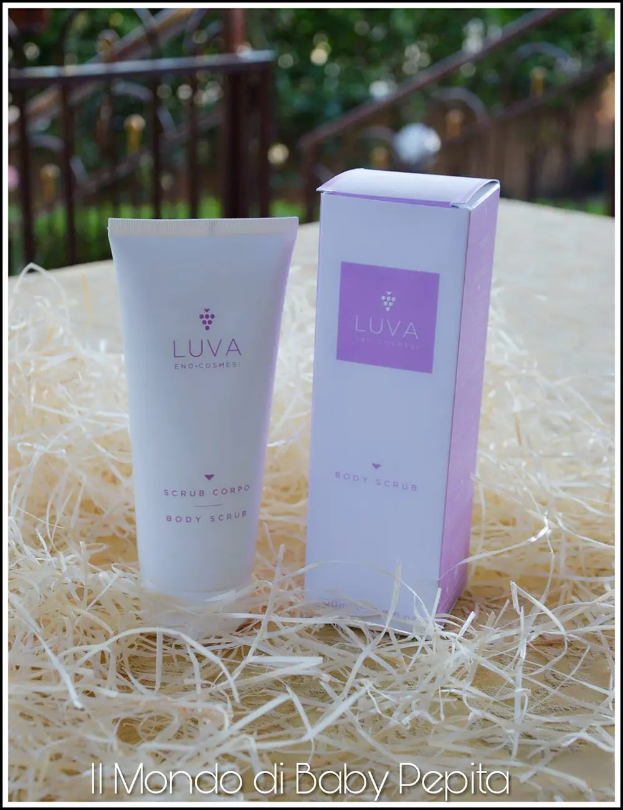
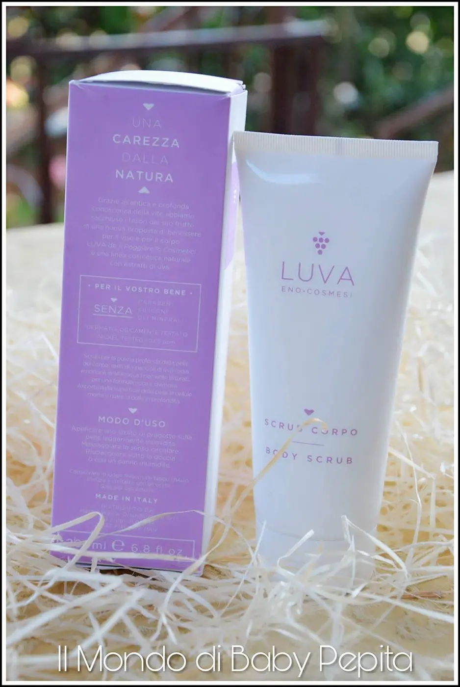
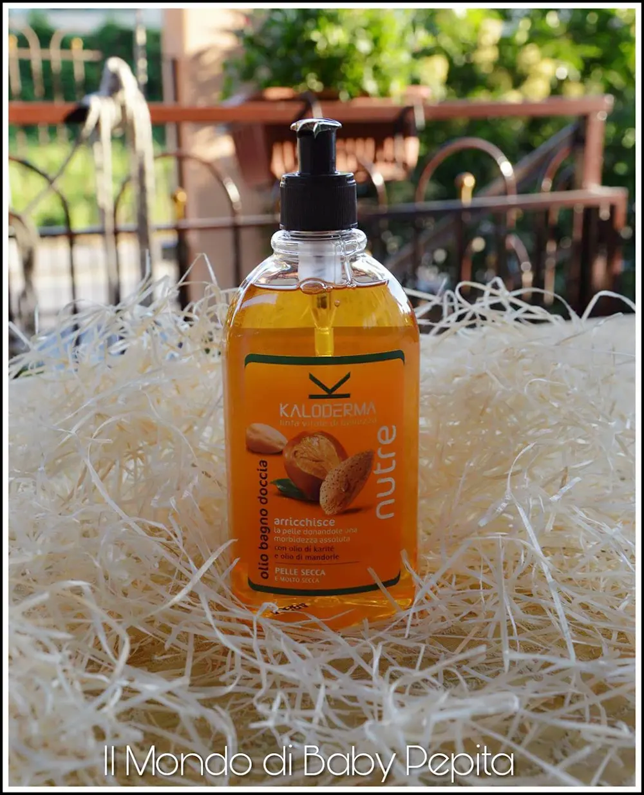
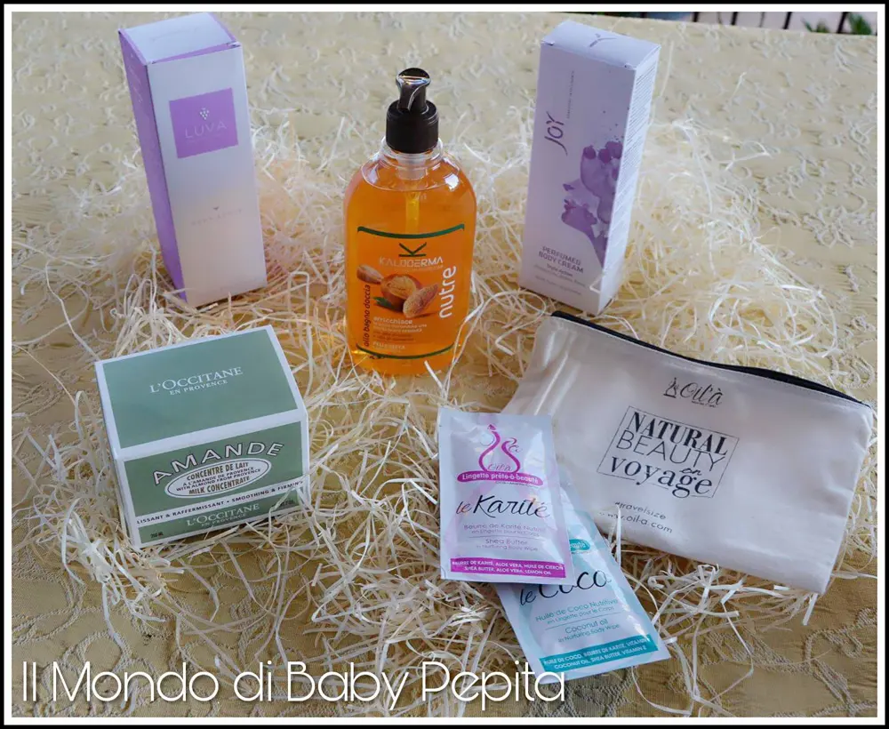

#BOTY2017 - al femminile
#BOTY2017 è il primo Digital Beauty Award in Italia nel campo della cosmesi che coinvolge influencer e utenti di al femminile. Lanciato per la prima volta in Francia nel 2016 dal nostro sito gemello aufeminin, #BOTY2017 è sbarcato ora in Italia.Bisognava candidarsi al Provato da Voi(che conta circa già 19000 iscritti) e testare i differenti prodotti in modo da eleggere il loro prodotto del cuore. Ogni tester riceverà via mail, alla fine del periodo di test che durerà circa un mese, un dettagliato questionario di valutazione #BOTY2017.Allo stesso tempo, 40 influencers ed esperte di beauty, testeranno tutti i prodotti a disposizione e seguiranno l’avventura #BOTY2017sui loro blog e sui loro canali social, come YouTube, Instagram, Snapchat e Pinterest.
Lo scopo dell'iniziativa #BODY2017 di al femminile è quella di svelare i prodotti preferiti da noi donne del settore beauty, fashion e lifestyle. Io sono stata scelta per la categorie BODYCARE e mi hanno inviato una scatola piena di prodotti.

IL KIT DI AL FEMMINILE CONTENEVA:
- Oil’A Foglio idratante corpo
- Joyderm Crema Corpo Profumata
- L’occitane en Provence Mandorla Concentré de lait
- Luva Scrub Corpo
- Kaloderma Olio bagnodoccia Nutre
Andiamo a vedere nel dettaglio ogni prodotto.

Oil'A Foglio idratante corpo
Oil'à é il primo foglio corpo idratante in formule 100% naturali che ha rivoluzionato il mondo degli emollienti naturali.
Stanche di sciogliere burri e raccogliere tracce di oli idratanti? al femminile propone oil'à:
Grazie ai fogli idratanti Oil’à l’idratazione per il corpo 100% naturale diventa rapida, pronta all'uso e senza rischi di trasporto; il suo nuovo formato di foglio monodose a base di burri e oli idratanti 100% naturali permette di idratarsi in meno tempo... e in molte occasioni!
Una coccola calda o fredda.
Appoggiando Oil’à sul termosifone e nel frigo, diventa una coccola a prova di stagione: calda in inverno per un’avvolgente coccola sulla pelle a base di oli naturali sciolti e fresca in estate per un cocktail rinfrescante e nutriente.
Disponibile nella mini gamma di Burro di Karité e Olio di Cocco.
OPINIONE: Il foglio idratante della Oil'à è una piacevole novità. La pelle, soprattutto d'estate per via delle esposizioni al sole e dell'aria condizionata, ha bisogno di essere idratata e non sempre è possibile farlo (per esempio quando si è in viaggio).
Invece Oil'à ha ideato delle comode "salviettine" idratanti pronte all'uso in qualsiasi momento, nella pratica confezione sigillata che non permette al prodotto di rovesciarsi e si può quindi comodamente portare in borsa. Sono piacevoli anche le profumazioni delle due varietà in cui è disponibile il prodotto: all'olio di cocco, che lenisce la pelle, ed al burro di Karitè, che ha proprietà antiossidanti. Insomma impossibile farne a meno!
PREZZO: 0 € - 5 €
Joyderm Crema Corpo Profumata

La crema corpo profumata JoyDerm con la sua delicata e gradevole profumazione al gelsomino, è un piacevole alleato per la cura del corpo: idrata efficacemente la pelle che appare sin da subito liscia e morbida al tatto.
Drena i liquidi in eccesso riducendo le adiposità localizzate e rimodella la silhouette rassodando e migliorando il tono cutaneo.
E’ anche in grado di lenire la pelle e combattere gli arrossamenti.

Grazie alla speciale texture si assorbe velocemente, non unge e non macchia i vestiti consentendo di rivestirsi subito dopo la sua applicazione. Sin dalle prime applicazioni la pelle ritroverà il suo fisiologico benessere.
OPINIONE: Questa crema corpo l'ho trovata con una profumazione delicata,ma molto gradevole e facile da spalmare.
La crema ha una texture densa ma si distribuisce facilmente, Si assorbe subito e soprattutto non unge la pelle ma la idrata, le da un aspetto vellutato e la profumazione dolce, delicata, buona del gelsomino persiste per diverse ore.
Scelgo le creme non solo in base ai principi attivi ma anche per la profumazione e questa è fantastica.
Neanche la conoscevo, appena l'ho provato la mia pelle è risultata liscia,morbida e setosa,ottimo prodotto.
Non è un prodotto Bio ma non contiene parabeni, cosa molto importante! È adatta a tutte le pelli e grazie alla presenza del Bisabololo è un ottimo lenitivo per le pelli esposte al sole, ai "traumi" delle cerette.
PREZZO: 21 € - 40 €
L'occitane en Provence Mandorla Concentré de lait

Formulata partendo da efficaci principi attivi derivati dalla mandorla, questa crema corpo aiuta la pelle a ritrovare un aspetto più liscio e tonico apportando un'idratazione prolungata per 48H. La pelle è immediatamente nutrita e riconfortata grazie all'azione di un concentrato di latte di mandorla.
Grazie ad un nuovo complesso che associa un estratto di nocciolo di mandorla la pelle è visibilmente più liscia ed elastica grazie all'azione delle proteine della mandorla.

Dopo un mese di utilizzo i contorni sono più netti la pelle è più tonica, avvolta in un velo di morbidezza e lucentezza.
OPINIONE: Felice di aver provato questa crema. A parte che adoro il vasetto che fa da scenografia al mio bagno.
Parlando della crema ha un profumo alle mandorle che è buonissimo. Vien quasi voglia di mangiarla.
È una crema che idrata per 48 ore la pelle tutto questo grazie al latte di mandorla che fa risultare la pelle liscia e profumata.
In pochi giorni ho potuto notare la mia pelle più tonica e più liscia.
La uso soprattutto dopo aver fatto docce e mi trovo benissimo.
PREZZO: 41 € - 60 €
Luva Scrub Corpo

Gli agenti esfolianti sono ottenuti dai semi di Vinaccioli e dai noccioli di Albicocca che garantiscono un’azione purificante delicata e del tutto naturale. La loro granulometria è stata scelta in modo adeguato per garantire un’azione delicata ma profondamente efficace.
La formulazione con olio di cocco idrata la pelle lasciandola morbida e vellutata.
Essendo formulato con micro-granuli molto fini, può essere utilizzato anche sul viso, evitando le zone più fragili.
Il suo utilizzo prepara la pelle all'abbronzatura che risulta più brillante e duratura.
Il risciacquo del prodotto dopo l’applicazione avviene molto facilmente anche solo con il getto della doccia.

Opinione: Ho provato il prodotto,e devo dire l'ho trovato eccezionale. Lascia la pelle liscia e levigata a differenza di tutti gli altri prodotti che mi irritavano la pelle senza produrre gli effetti voluti. Anche la profumazione è molto gradevole.
Adatto a pelli mature per combattere le rughe.
È una vera coccola quotidiana per collo, viso e décolleté.
PREZZO: 21 € - 40 €
Kaloderma Olio bagnodoccia Nutre

Consistente e cremoso sulla pelle, con il massaggio e a contatto con l’acqua si trasforma in una mousse soffice.
La sua formula, arricchita con nutrienti naturali come l’Olio di Karité e l’Olio di Mandorle Dolci, deterge con dolcezza salvaguardando lo strato idrolipidico della pelle. La sua azione nutriente e normalizzante lascia la pelle vellutata e morbida come la seta e previene la disidratazione, anche in caso di lavaggi frequenti.
OPINIONE: Amo quest'olio bagno doccia. Prima di tutto voglio parlarvi del profumo. . alle mandorle. .che è fantastico!
È molto indicato per pelli secche.. Noi a casa l'abbiamo messo in bagno come sapone per braccia e mani.
Posso dire che lo uso tutte le mattine e la mia pelle ha trovato vigore. Non è più secca ed è ben nutrita.
PREZZO: 6 € - 10 €

Ringrazio al femminile per questa opportunità .